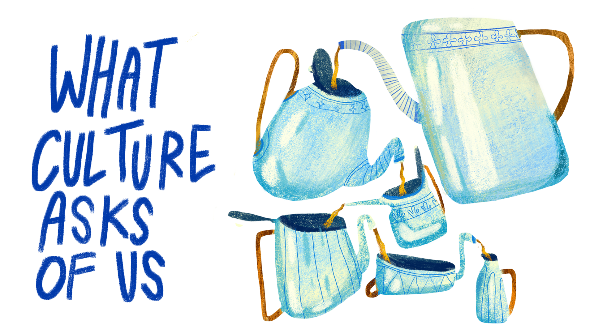
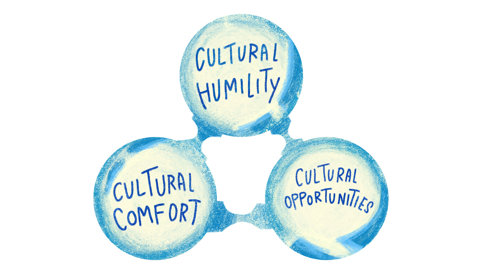
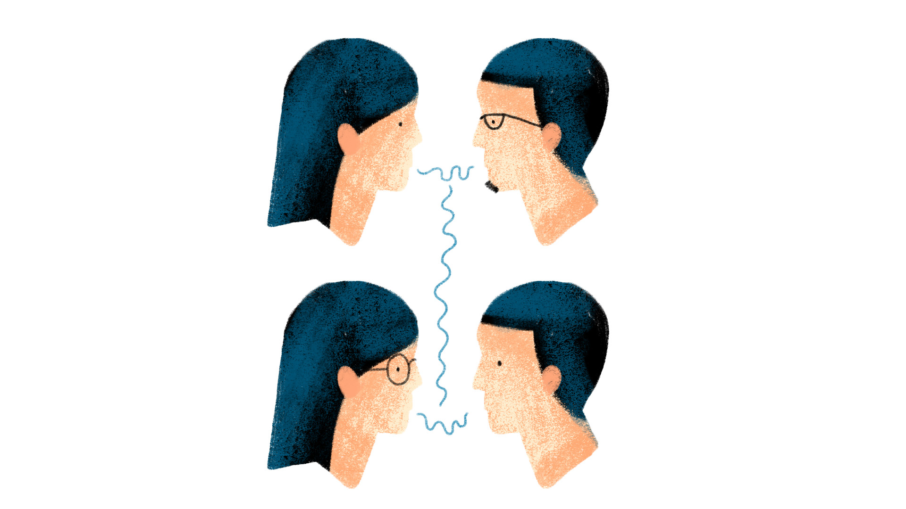

Kaha Mind
The
Dossier
April

Editor's Note:
Welcome to this month's issue of The Dossier, where we translate emerging psychological research into insights for therapeutic practice.
This issue of The Dossier comes out in the week of Ambedkar Jayanti, a moment that invites us to reflect on caste, identity, and the structural forces that shape people's lives and sense of self. It felt like the right time to think together about what it actually means to hold a client's cultural world with care.
Most of us would say we believe that culture matters in the therapy room. But believing it and actually attending to it are different things. A client's caste background, their class, their experience of migration or belonging or exclusion, these are not context to file away during an intake. They are often the very material that a presenting problem is made of. When we miss them, or when we sense them but do not know how to approach them, something important goes unaddressed. And when something goes unaddressed in the therapy room, it rarely just disappears.
This month, we turn to cultural humility, but not in the abstract way it often gets discussed in training. We focus specifically on the supervisory relationship, which is often where therapists first encounter cultural humility as a lived experience rather than a concept.
Drawing on a recent article by Winkeljohn Black et al. (2025) we explore four core ingredients of cultural humility and what it takes to actively cultivate them in supervision.What stands out in this work is its insistence that this is not something supervisors can simply ask of trainees. It is something they must model, inhabit, and remain accountable to within the supervisory relationship itself.
Article in Focus:
Winkeljohn Black, S., Wilcox, M. M., Pérez-Rojas, A. E., & West, L. (2025). Identifying and enhancing the necessary ingredients for cultural humility in supervisory relationships. Psychotherapy, (1), 62(1) 55–62.. https://doi.org/10.1037/pst0000538
Key Takeaways:
- The Multicultural Orientation (MCO) framework is built on the three pillars of cultural comfort, cultural humility and cultural competence
- Cultural humility is built, not given
Cultural humility is the central organizational pillar of the MCO framework. It is built from four ingredients: cultural self-awareness, receiving feedback mindfully, accurate empathy, and curiosity toward others.Each ingredient has an internal dimension, meaning what happens inside the clinician, and a relational one, meaning how that internal process shows up in their actual encounter with another person. They overlap significantly, but separating them out gives supervisors something concrete to assess and work with. - Ingredients of cultural humility are interdependent
The core aspects of cultural humility are interdependent. Working on one tends to shift the other processes as well. This means supervisors do not need to address everything at once. Finding the most pressing area of growth or gap from embodying cultural humility (ideally in collaboration with the supervisee), is often the more effective and sustainable approach to enabling the development of cultural humility in the supervisee. - The supervisory relationship is the medium, not just the setting
The supervisory relationship is the medium through which all of this development happens. Which means that how supervisors show up in that relationship, not just what they teach, shapes what becomes possible for the supervisee. - Combining the Assess–Build–Connect (ABC) model with multicultural orientation is effective
Supervisors may be better able to foster cultural humility when they combine the Multicultural Orientation in Supervision (MCO-S) with a clear, structured approach like the Assess–Build–Connect (ABC) model. This involves first identifying a supervisee’s current strengths and gaps, then supporting deeper self-awareness through reflective practices, and finally creating opportunities for meaningful cultural engagement. Together, this helps translate cultural humility from an abstract ideal into something observable and developable within the supervisory relationship.
Article in a Nutshell:
Despite how often cultural humility gets named in training, there has been little guidance on how supervisors can concretely assess and develop it in supervisees. This article addresses the gap by synthesising existing frameworks like cultural humility - a central pillar of multicultural orientation framework - into four necessary ingredients. The authors also draw on a related concept, the multicultural orientation in the supervisory relationship (MCO-S), which describes how supervisors can embody MCO by becoming aware of and reducing their power differential in supervision, modelling self-awareness, and demonstrating cultural comfort in supervisory sessions. Research supports that MCO-S leads to stronger supervisory relationships, and the authors argue that supervisor cultural humility, just as therapist cultural humility does in therapy, can facilitate the repair of ruptures in supervision when they occur.
The Multicultural Orientation (MCO) is a framework for therapists to understand and address the impact of cultural identities on the therapy sessions. It describes three processes in culturally responsive clinical work: cultural humility, cultural comfort, and cultural opportunities.
- Cultural humility is the foundation of both cultural comfort and cultural opportunity. It means staying genuinely open to others and attentive to the aspects of cultural identity that matter most to the person in front of you.
- Cultural comfort is the relative ease a clinician feels in cultural conversations.
- Cultural opportunities are the moments in a session when a cultural theme surfaces and the clinician recognises it and responds.
- Supervisor Cultural Self-Awareness: Before supervisors can effectively support supervisees' cultural development, supervisors must cultivate their own cultural self-awareness through ongoing reflection on their cultural identities. This awareness equips supervisors to recognize and name how their identities may be shaping the supervisory relationship itself, as well as how they understand and respond to clients supervisees bring to supervision.
- Cultural Self-Awareness Assessment: Supervisors can support supervisees in developing cultural self-awareness by collaboratively assessing supervisees' cultural strengths vs. areas of unawareness through introspective activities like cultural genograms or through feedback after directly observing a supervisee's clinical work.
- Process Coding: Process coding can help supervisees identify missed process opportunities in their client sessions - moments where clients reference their cultural background, identity, or experience and supervisees moves past them without acknowledgement or exploration. Process coding allows supervisees to learn to better identify misattunement to their clients, explore reasons for such misattunement, and better demonstrate interpersonal cultural humility. This can also be applied to the supervision itself.
- Videotape Review, Live Supervision, and Role-Play: Using these modalities to assess supervisees' interpersonal skills provides opportunities for collaborative consciousness raising around supervisees' (a) privileged identities and blind spots, (b) own identity development, and (c) how these influence their interpersonal demonstration of cultural humility.
- Diverse Narratives and Theoretical Models: Supervisees can engage with resources in the form of narratives from diverse voices, identity development frameworks, and other theoretical models as tools to more effectively make meaning of feedback and to understand the origins of and triggers for their own reactions as they develop greater cultural self-awareness.
- Assessing Supervisee Defenses: Supervisors can assess supervisees' defense - like humour, self-deprecation, rationalization, or shutdown - in supervision and when viewing recordings of their clinical work. Supervisors can use here-and-now processing to verbalize observations of possible defenses and collaboratively explore their function.
- Facilitating Interpersonal Empathy: Supervisors can assess and facilitate supervisees' expressed empathy by evaluating and encouraging supervisees to (a) ask open-ended questions and use reflective statements to check in with the client, particularly around culturally laden topics; (b) notice whether empathic reflections or questions appear to be facilitating, rather than diminishing, the client's emotional expression; and (c) use here-and-now processing to check in with clients about whether their expressed empathy is accurate. Supervisors should also routinely assess supervisees for countertransference and emotion regulation, and provide psychoeducation on how these might impact one's capacity for cultural responsiveness.
- Modeling Self-Reflection: Supervisors can model leaning into difficult cultural conversations, nonjudgment, and critical self-compassion in acknowledging and exploring cultural automatic thoughts, as well as curiosity toward their supervisees' cultural experiences.

The Four Ingredients of Cultural Humility
Cultural Self-AwarenessCultural self-awareness refers to the ability to recognise, in real time during a session, how one's own identities, experiences, and social positioning are influencing perception and interaction with clients. It is not static. A supervisee might have reflected deeply on their racial or ethnic identity and still have significant blind spots around class, religion, or ability. Supervisors need to hold this complexity rather than treating cultural self-awareness as something a supervisee either has or does not have. What makes it genuinely difficult is that there is no single objective picture of one's own cultural self. It gets assembled across clients, supervisors, self-reflection, and direct feedback, with different people offering different pictures based on their own lived experiences. This requires supervisees to stay open to multiple, sometimes contradictory, sources of information about how they show up in the room.
Receiving Feedback MindfullyReceiving feedback mindfully is about what happens when a supervisee encounters feedback that is hard to hear. It involves being able to recognise and regulate one's own defences, maintain enough stability to tolerate frustration, and respond with curiosity rather than shutdown or deflection. Some supervisees laugh when they feel challenged; others rationalise or go quiet. None of this is a character flaw; it is a signal that something has been activated. In cultural responsiveness work new information can challenge long-held beliefs. So by supporting honest self-examination and self-compassion, supervisors can build a space where learning feels threatening.
Accurate EmpathyAccurate empathy involves both understanding what a client is feeling and actually being moved by it. The article distinguishes between cognitive empathy, which is the capacity to accurately identify another's emotional state and take their perspective, and affective empathy, which is the felt, embodied experience of resonating with another person's experience. Both can fail in different directions: a supervisee who intellectualises a client's pain without being moved by it and one who becomes flooded by it and loses their grounding are facing opposite versions of the same challenge. The article notes that early-career therapists, who are often anxious and preoccupied with their own performance, may find it harder to fully attune to clients. Addressing that underlying anxiety, rather than simply instructing supervisees to be more empathic, is therefore an important part of the supervisory task.
Curiosity Toward OthersCuriosity toward others is the genuine desire to move toward what is novel, uncertain, or unfamiliar about another person's cultural experience. The article draws a distinction that is worth sitting with: humble curiosity, which arises from a position of genuine equality and not-knowing, is different from intellectual or voyeuristic curiosity, which can emerge when power imbalances in the therapeutic relationship go unexamined. A supervisee who approaches a client's cultural world as something to study or solve, rather than as something to be genuinely interested in, is doing a different thing even if it looks similar on the surface. Curiosity also involves a degree of risk, and if a supervisee already feels defeated or struggles to receive feedback, they may foreclose on it as a form of self-protection. The four ingredients of cultural humility are interdependent, and movement in one tends to create movement in the others. A supervisee who develops greater self-awareness becomes better able to receive feedback; greater feedback receptivity makes it possible to sit with the discomfort that accurate empathy requires; a supervisee who feels genuinely seen in supervision is more likely to take the relational risks that curiosity demands. Supervisors can start with whichever ingredient seems most underdeveloped and trust that it will not stay isolated for long.
Did you know?
The Learning RegressionSupervisees do not always perform in the therapy room the way they do in training spaces. What feels clear in theory can become harder to access in the pressure of a live session. This shift, often called as “learning regression,” is not a sign of incompetence. It reflects the difference between knowing about something and being able to do it in a relationship. Cultural humility is especially vulnerable here, because it requires staying open and reflective precisely when one feels uncertain, anxious, or exposed.
Parallel Process in SupervisionParallel process refers to the way relational dynamics from therapy can reappear in supervision, and vice versa. A supervisee may unknowingly bring the same patterns they experience with a client into their interaction with the supervisor. Similarly, what remains unaddressed in supervision often remains unaddressed in therapy. This makes the supervisory relationship not just a context for skill-building, but the actual medium through which cultural humility either gets developed or does not. It also means that supervisor self-awareness is not a background condition; it is part of the active work. What gets modelled, avoided, or repaired in the supervisory relationship shapes what becomes possible in the therapy room.
Cultural Humility: From Supervision to Therapeutic Alliance
The following vignette is drawn directly from the research article. Divya is an Indian American psychiatry resident whose client, a Black and biracial man in his thirties, has been seen by a series of residents over the years and never once been asked about his racial identity. He is working through anxiety and depression connected to his father's suicide, which has shaped how he understands himself as a man, a man of colour, a husband, and a father. After reviewing video from Divya's first session, her supervisor, a clinical psychologist who also identifies as Black and biracial, notices that the client's racial identity has not come up at all. Rather than treating this as a gap to correct, she responds with curiosity. She wonders aloud whether race might be shaping the client's sense of self, shares her own hypotheses without judgement, and creates space for Divya to reflect on what she knows and does not yet know. Divya takes the risk. In their next session, she asks the client directly, and they spend twenty minutes on his experiences of racism, his father's experiences of racism, and what it meant to grow up biracial and feel not quite enough in multiple worlds. Divya draws on her own experience of acculturation as a South Asian woman who immigrated as a child, not to collapse the difference between them, but to be genuinely present across it. The therapeutic relationship deepens visibly. What made this possible began in supervision.

What Does This Mean for Us as Therapists?
Reading this article, what stands out is how much it reframes cultural humility as something that happens between people, not just inside a therapist's head. It is not enough to have done the reading or to have a reasonably accurate view of your own cultural identities. Cultural humility is a quality of presence that gets built through repeated, honest encounters with feedback, with difference, and with your own reactivity, in a relationship that makes it safe enough to do that.
For supervisors, the practical implication is this: the processes most worth focusing on are the ones that build the conditions for the other ingredients to develop. A supervisory relationship in which a supervisee feels genuinely safe to be uncertain, to not know, and to be wrong about cultural processes is a relationship in which all four ingredients are more likely to grow. That quality of safety is not separate from the work; it is the work.
This also matters in an Indian context, where the supervisory relationship often carries significant hierarchical weight. Vulnerability in an evaluative relationship with a senior colleague can feel professionally inadvisable. Caste, class, language, religion, and gender create complex layers of difference and power within supervisory dyads that may go unacknowledged, not because no one notices them, but because the norms of the setting make naming them feel like an overstep. The parallel process operates here just as it does anywhere else. What a supervisor is unwilling to name in supervision is unlikely to get named in sessions. And the supervisee who has never had their class position or regional identity acknowledged in training will find it harder to acknowledge those things with their clients.
Toolkit for Supervisors
What's Coming Next: Save the Date
Stay tuned for our next Dossier issue in May! In the meantime, we welcome your input. If you have ideas for research questions, or areas you would like the digest to explore, please share them with us at research@kahamind.com.
Reference List (Happy reading!)
Winkeljohn Black, S., Wilcox, M. M., Pérez-Rojas, A. E., & West, L. (2025). Identifying and enhancing the necessary ingredients for cultural humility in supervisory relationships. Psychotherapy,(1)62(1), 55–62.https://doi.org/10.1037/pst0000538.